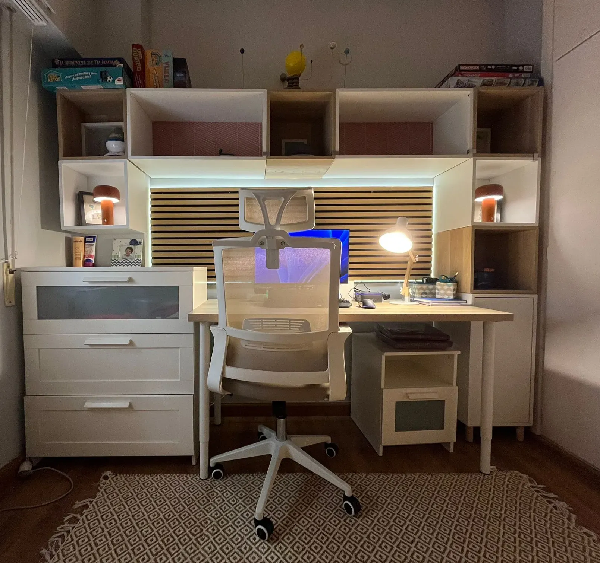
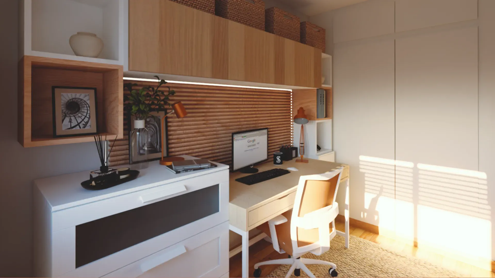
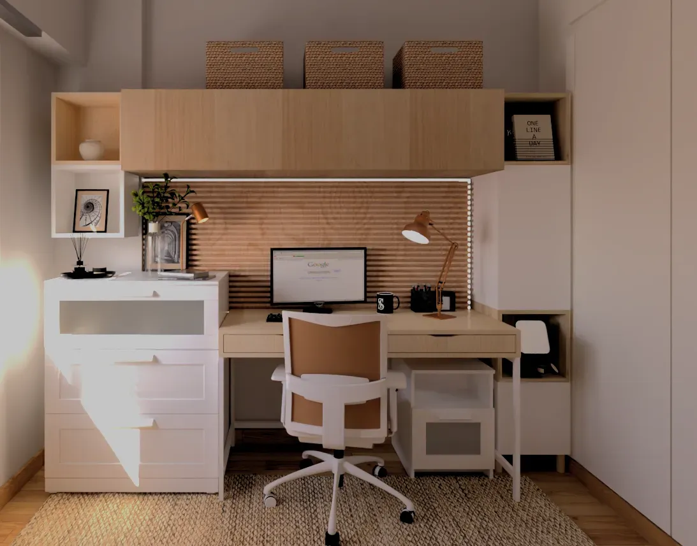
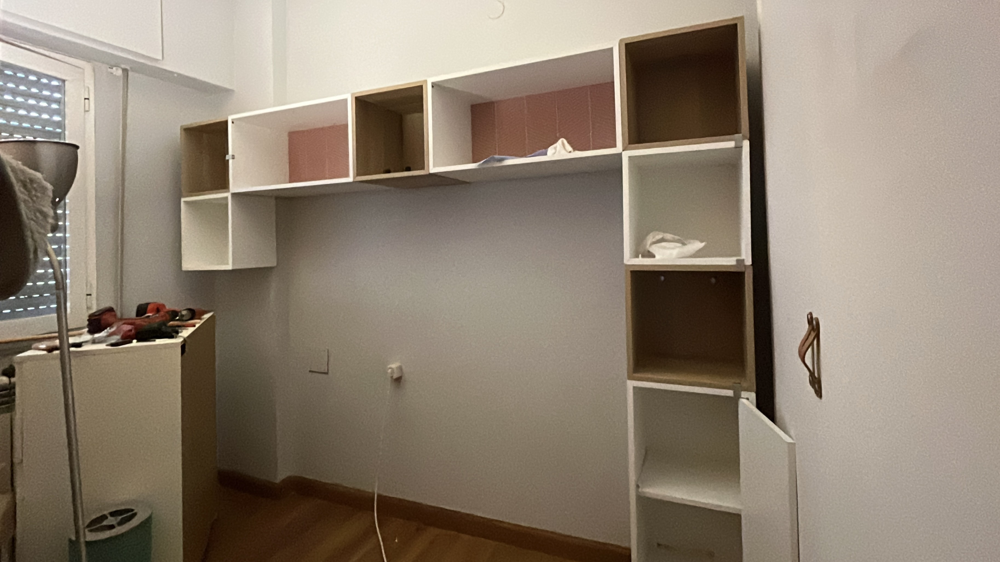
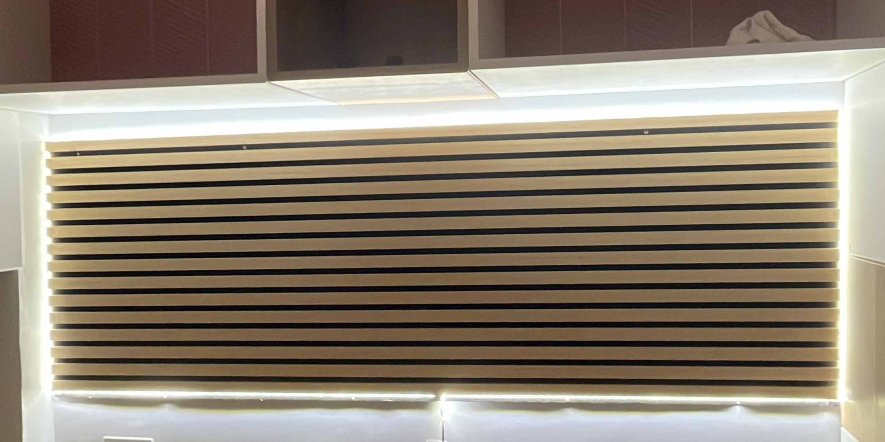
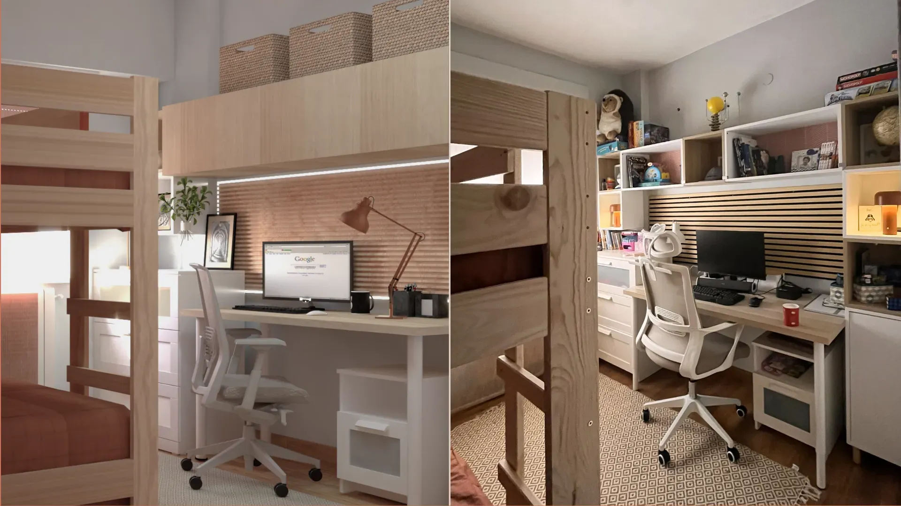
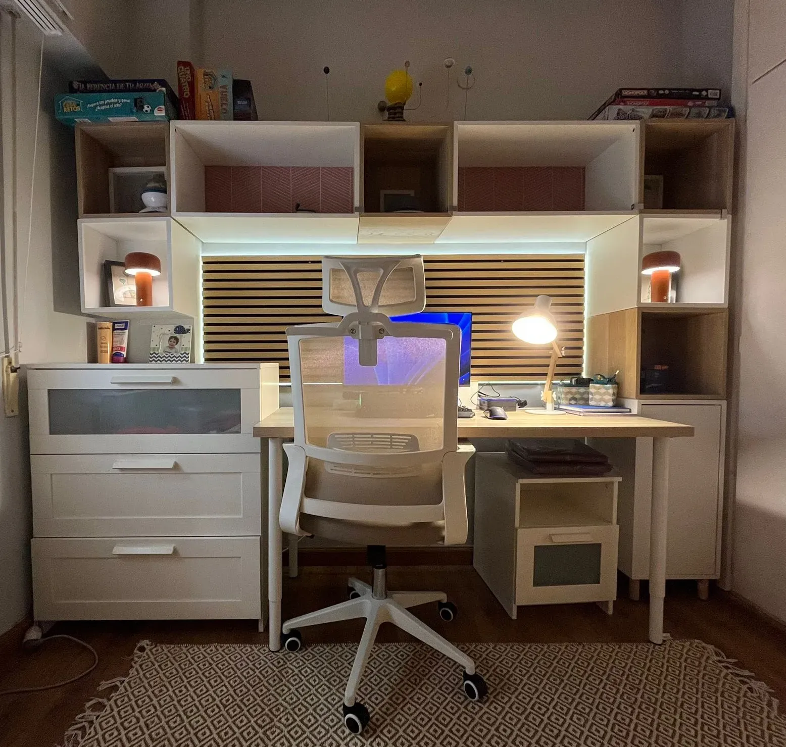
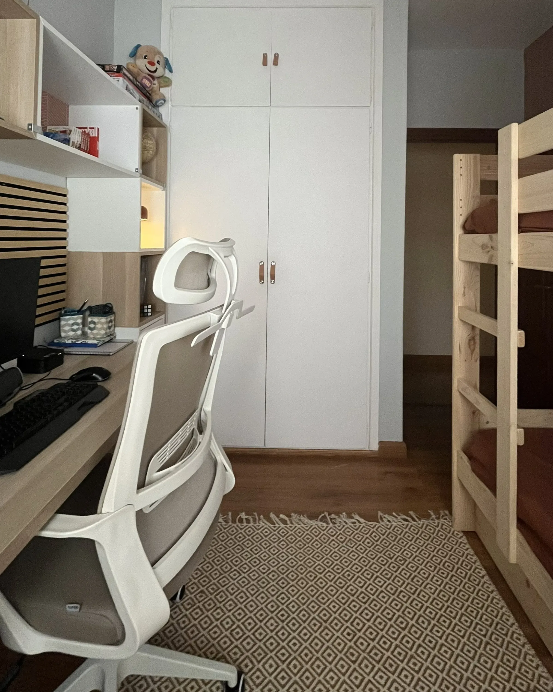

Transformación Dormitorio juvenil · Madrid
Optimización espacial en dormitorio juvenil de superficie reducida, resuelto mediante un
sistema continuo de mobiliario integrado que concentra descanso, estudio y almacenaje sin intervención de obra.
La propuesta se apoya en modulación precisa, control de alturas y continuidad de planos, priorizando
viabilidad constructiva y claridad en ejecución, con validación en resultado real.
Contexto
Condicionantes, objetivo operativo y traducción a ejecución.
El espacio original planteaba una geometría ajustada y un programa exigente para su superficie: descanso, puesto de estudio funcional y capacidad real de almacenaje, con un uso intensivo y evolución en el tiempo.
El objetivo fue resolver el programa completo sin fragmentar el espacio, evitando piezas independientes y apostando por una solución unitaria que facilitara la lectura espacial y la ejecución. La intervención se plantea sin obra, trabajando mediante proporción, modulación y sistema, con atención a alturas útiles, encuentros y continuidad de planos.
Planteamiento
Lectura rápida · verificación dimensional · soporte a coordinación.
Planta acotada para encaje real del programa, alzados para control de alturas y encuentros, y axonometría para lectura del conjunto. En coordinación, una lámina de instalación aporta trazabilidad y reduce interpretaciones en taller/obra.
Propuesta
Programa completo en 9 m²: jerarquía, continuidad y viabilidad.
La solución se concibe como un sistema continuo donde cada pieza responde a una lógica común de modulación y alineación. Se prioriza continuidad horizontal para ampliar percepción espacial, control estricto de profundidades y pasos libres, e integración del puesto de estudio como parte estructural del conjunto. La iluminación se incorpora como componente del sistema (posición y alturas), evitando elementos añadidos que comprometan ejecución o mantenimiento.

Sistema continuo
Se articula un frente único como sistema modular que integra trabajo, almacenaje y soporte lumínico, con criterio dimensional y control de alineaciones para garantizar viabilidad de ejecución y lectura limpia.
- Plano de trabajo dimensionado para uso prolongado, con profundidad y altura verificadas.
- Almacenaje inmediato + fondo (temporada), con jerarquía de accesibilidad y capacidad útil real.
- Ritmo controlado de huecos y cerrados + luz integrada, para continuidad y reducción de interferencias.

Proporción y uso
Se definen cotas, alturas y tolerancias para asegurar compatibilidad entre carpintería, instalación eléctrica y uso real, evitando interferencias y garantizando una ejecución precisa sin necesidad de obra.
- Dimensionado según ergonomía y secuencia de uso.
- Iluminación integrada (puntual + ambiente) con posición y altura coordinadas.
- Solución desmontable y adaptable, adecuada para entornos de vivienda en alquiler.
Ejecución
Puntos críticos: replanteo, puntos eléctricos y encuentros.
En coordinación se fijan ejes, cotas y encuentros para asegurar continuidad de líneas y evitar ajustes en obra. Se definen alturas y posiciones de tomas/puntos de luz (según alcance), el paso de cableado y la secuencia de montaje, garantizando un sistema ejecutable sin improvisación y compatible con tolerancias de carpintería e instalación.


Resultado
Validación en ejecución: coherencia entre planteamiento y resultado construido.
El resultado confirma la eficacia del sistema planteado: encaje preciso, continuidad de planos y compatibilidad entre
modulación, iluminación y uso real. La ejecución mantiene la lectura unitaria prevista, minimizando ajustes en obra y
garantizando un funcionamiento claro del conjunto.
En 9 m², el éxito no reside en añadir elementos, sino en resolver el programa completo mediante
criterio dimensional, coordinación y control de encuentros.




{kind=link}
{kind=link}
{kind=link}
{kind=link}
{kind=link}
{kind=link}
{kind=link}
{kind=link}
{kind=link}
{kind=link}
{kind=link}
{kind=link}
{kind=link}
{kind=link}
{kind=link}
{kind=link}
{kind=link}